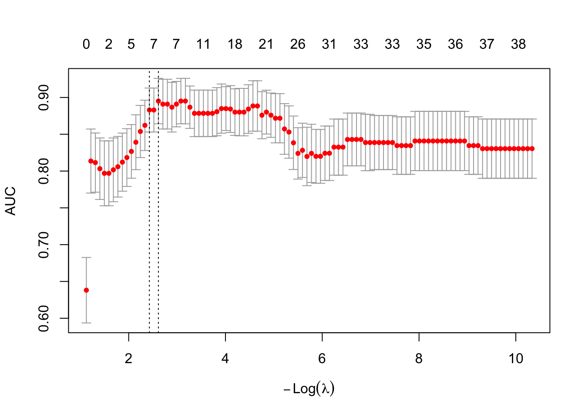
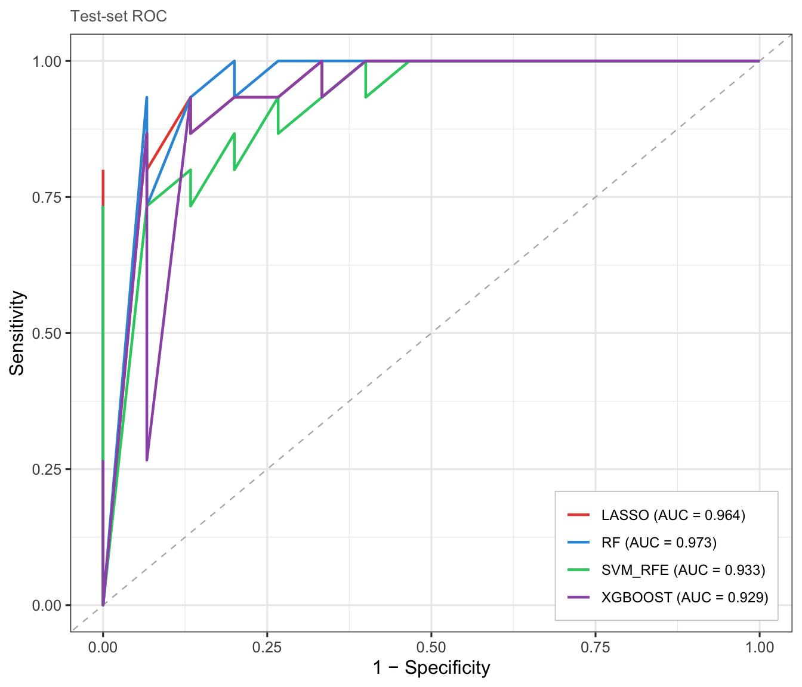
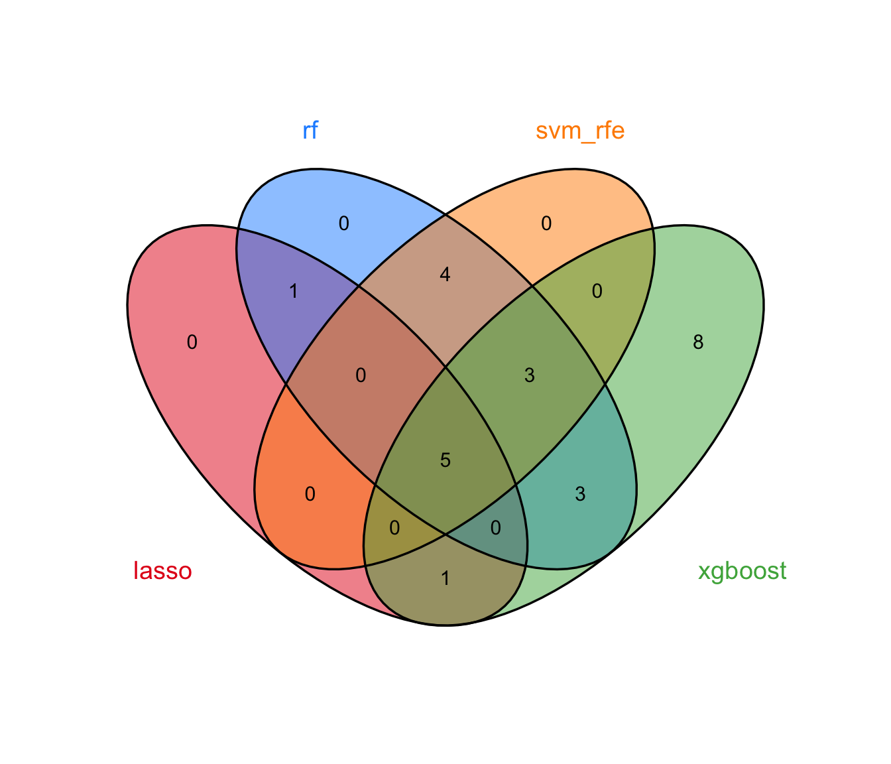
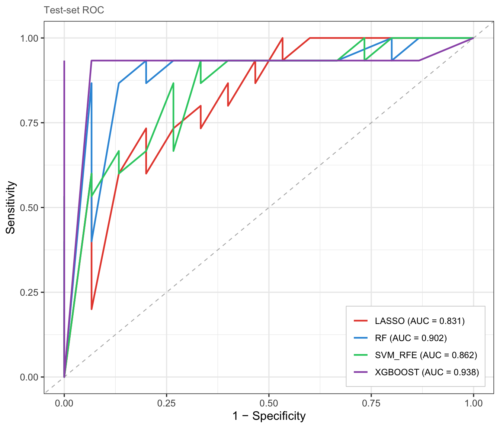
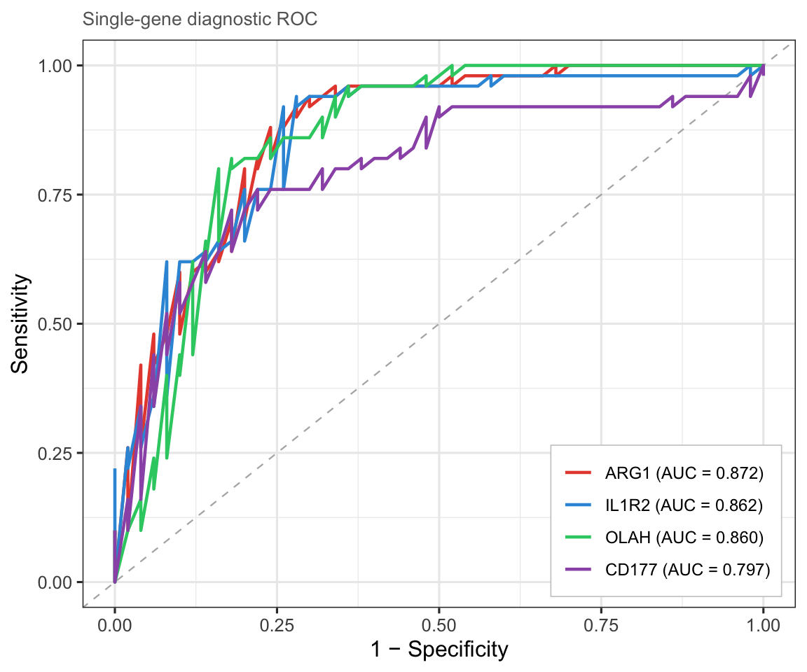
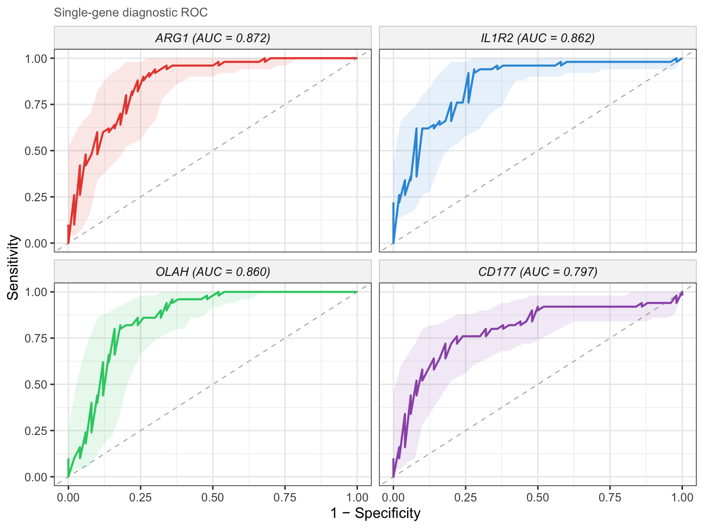
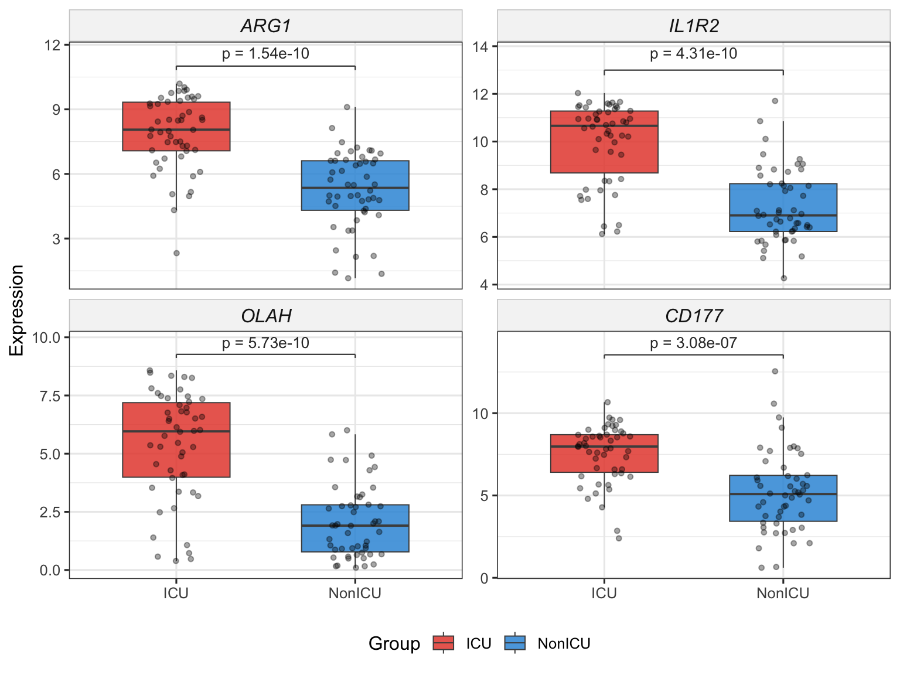
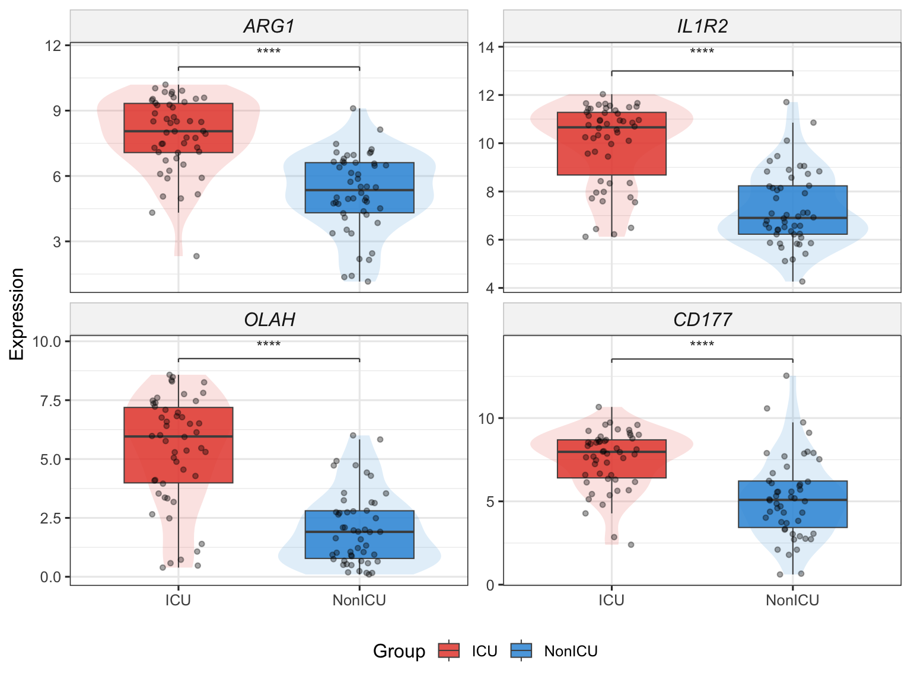

Chapter 8 Machine learning–based key target screening
In network pharmacology, candidate targets derived from compound–target mapping and PPI network analysis often number in the dozens to hundreds. Identifying a concise set of key targets, which are the most predictive of the disease phenotype, is essential for downstream experimental validation and mechanistic interpretation. Machine learning (ML) offers a data-driven, unbiased approach to this task: by training classifiers on transcriptomic profiles and evaluating feature importance, ML methods can distill large candidate pools into biologically meaningful gene signatures.
A growing number of publications employ a multi-algorithm consensus strategy, in which several complementary ML methods (e.g., LASSO, Random Forest, SVM-RFE, XGBoost) are applied in parallel; genes consistently selected across methods are reported as the final key targets. This consensus approach mitigates algorithm-specific biases and enhances the robustness of the selected biomarkers.
TCMDATA provides an ML module that implements this workflow end-to-end: from data preparation and model fitting through consensus extraction and publication-ready visualization. Three evaluation modes are supported:
| Mode | Description | Use case |
|---|---|---|
| A | All samples used for training; performance assessed via out-of-fold (OOF) or out-of-bag (OOB) predictions | Single dataset; most common in network pharmacology studies |
| B | Internal random train/test split | When an independent cohort is unavailable but held-out validation is desired |
| C | External validation on an independent test set | When a separate cohort (e.g., different GEO series) is available |
8.1 Introduction
8.1.1 Example dataset
Throughout this chapter we use the built-in covid19 dataset, which contains RNA-seq expression profiles from 100 COVID-19 patients (GSE157103). Samples are labelled as ICU (intensive care unit) or NonICU, providing a clinically relevant binary classification task.
#> List of 3
#> $ expr :'data.frame': 5000 obs. of 100 variables:
#> $ group_info:'data.frame': 100 obs. of 2 variables:
#> $ info :List of 7We extract the expression matrix (genes × samples) and the group labels. To simulate a realistic candidate gene list, we select the top 50 most variable genes by inter-sample variance — in practice these would be the candidate targets obtained from upstream PPI / compound–target analysis:
expr_mat <- as.matrix(covid19$expr)
group <- covid19$group_info$group
## Select top 50 most variable genes by row variance
gene_var <- apply(expr_mat, 1, var)
genes <- names(sort(gene_var, decreasing = TRUE))[1:50]
cat("Expression matrix:", nrow(expr_mat), "genes ×", ncol(expr_mat), "samples\n")#> Expression matrix: 5000 genes × 100 samples#> Group levels: NonICU ICU#> Top 50 high-variance genes selected: 50#> RPS4Y1, EIF1AY, HLA-DRB4, DEFA3, IFI27, IGHG1, HLA-DRB3, IGLC2, IGHA1, OLAH, DEFA1, IGLC3, DDX3Y, DEFA1B, IGLC1, JCHAIN, IGHG3, LGALS2, IGKC, CD177, OLFM4, HLA-DRB5, RSAD2, DEFA4, IGHG2, GSTM1, MMP8, IFI44L, HBG2, ISG15, TMEM176B, ARG1, CTSG, LTF, HBA2, HBG1, IFIT1, IL1R2, IGHM, CXCL8, SIGLEC1, IGHG4, IGLL5, LCN2, MZB1, DAAM2, HBA1, PI3, HBD, IGHA28.1.2 Data preparation
prepare_ml_data() converts a gene × sample expression matrix into a structured tcm_ml_data object that all downstream modelling functions accept. It handles level reordering (so that the positive class is always levels[1]), zero-variance gene removal, and syntactic name cleaning.
For Mode A (full cross-validation, no hold-out), simply pass the matrix, group labels, and the desired positive class:
| Parameter | Description | Default |
|---|---|---|
expr_mat |
Numeric matrix (genes × samples) | — |
group |
Factor or character vector of class labels (length = ncol(expr_mat)) |
— |
positive_class |
Which level to treat as the positive class | NULL (alphabetical) |
genes |
Character vector of candidate genes to retain | NULL (all genes) |
split |
Logical; TRUE activates Mode B (internal split) |
FALSE |
train_ratio |
Training fraction for Mode B | 0.7 |
test_expr / test_group |
External test data for Mode C | NULL |
8.2 Mode A: full cross-validation
In Mode A, all samples participate in model training. Model performance is assessed using out-of-fold (OOF) predictions from cross-validation (LASSO, SVM-RFE, XGBoost) or out-of-bag (OOB) estimates (Random Forest). This is the most widely used setup in network pharmacology ML screening, as it maximises the training data and avoids random split bias.
8.2.1 LASSO regression
The Least Absolute Shrinkage and Selection Operator (LASSO)[2] applies an \(L_1\) penalty to logistic regression, driving irrelevant coefficients exactly to zero and thereby performing automatic feature selection. The penalty strength \(\lambda\) is selected via cross-validation; ml_lasso() supports both lambda.min (lowest CV error) and lambda.1se (most parsimonious model within one standard error), with the latter being the default.
\[\min_{\beta} \left\{ -\frac{1}{n} \sum_{i=1}^{n} \ell(y_i, \beta_0 + x_i^T \beta) + \lambda \|\beta\|_1 \right\}\]
#> === tcm_ml: LASSO ===
#> Features: 6 | CV AUC: 0.8829 | Sens: 0.7600 | Spec: 0.82008.2.1.1 CV error curve
The cross-validation curve shows the AUC (or deviance) as a function of \(\log(\lambda)\). The two vertical dashed lines mark lambda.min and lambda.1se:

8.2.2 Random Forest and Boruta
Random Forest (RF)[3] constructs an ensemble of decision trees, each trained on a bootstrap sample of the data. Feature importance is quantified by the mean decrease in Gini impurity (or accuracy) across all trees. To move from importance ranking to formal feature selection, ml_rf() employs the Boruta algorithm[4], which compares each real feature’s importance against that of randomly shuffled “shadow” copies; only features that consistently outperform their shadows are confirmed as relevant.
The pipeline proceeds in three phases:
- Train an RF on all candidate genes to obtain importance scores.
- Run Boruta all-relevant feature selection (tentative features resolved via
TentativeRoughFix). - (Optional, default) Re-fit an RF on the selected genes only, so that OOB metrics honestly reflect the chosen subset.
#> === tcm_ml: RF ===
#> Features: 20 | CV AUC: 0.9164 | Sens: 0.8400 | Spec: 0.82008.2.3 SVM-RFE
Support Vector Machine–Recursive Feature Elimination (SVM-RFE) iteratively trains a linear SVM and removes the feature(s) with the smallest weight magnitude \(|w_j|^2\) at each step, following the backward elimination framework of Guyon et al.[1]. The optimal feature-subset size is determined by the cross-validated ROC (or accuracy) profile across a grid of subset sizes. ml_svm_rfe() wraps caret::rfe() with sensible defaults tailored for gene expression data.
#> === tcm_ml: SVM_RFE ===
#> Features: 8 | CV AUC: 0.8807 | Sens: 0.8133 | Spec: 0.80678.2.4 XGBoost
eXtreme Gradient Boosting (XGBoost)[5] builds an ensemble of shallow decision trees sequentially, with each new tree correcting the residual errors of its predecessors. An internal \(k\)-fold CV with early stopping determines the optimal number of boosting rounds, preventing overfitting. Features are ranked by their cumulative information Gain across all trees.
#> === tcm_ml: XGBOOST ===
#> Features: 23 | CV AUC: 0.9077 | Sens: 0.7800 | Spec: 0.84008.2.5 Consensus analysis
The multi-algorithm consensus strategy identifies genes that are selected by at least min_methods models, thereby filtering out method-specific noise and retaining only robust biomarker candidates.
8.2.5.1 Running all methods together
run_ml_screening() provides a convenient one-call interface:
ml_list <- run_ml_screening(
ml_data,
methods = c("lasso", "rf", "svm_rfe", "xgboost"),
cv_folds = 5,
seed = 2025
)
summary(ml_list)#> method n_features auc_type auc auc_sd sensitivity
#> lasso lasso 3 CV 0.8527778 0.04083461 0.74
#> rf rf 20 CV 0.9164000 NA 0.84
#> svm_rfe svm_rfe 12 CV 0.8812000 0.06489222 0.84
#> xgboost xgboost 23 CV 0.9076970 0.02819658 0.78
#> specificity
#> lasso 0.780
#> rf 0.820
#> svm_rfe 0.796
#> xgboost 0.8408.3 Mode B: internal train/test split
When a single dataset is available but held-out validation is desired, Mode B randomly partitions samples into training and test sets. This avoids the optimistic bias of purely cross-validated metrics while still operating within a single cohort.
ml_data_B <- prepare_ml_data(
expr_mat, group,
positive_class = "ICU",
genes = genes,
split = TRUE,
train_ratio = 0.7,
seed = 2025
)
ml_list_B <- run_ml_screening(
ml_data_B,
methods = c("lasso", "rf", "svm_rfe", "xgboost"),
cv_folds = 5,
seed = 2025
)The ROC curves are now evaluated on the held-out test set, yielding an independent estimate of classifier performance:


8.4 Mode C: external validation
Mode C mirrors the most rigorous study design: the model is trained on one cohort and validated on an entirely independent dataset. prepare_ml_data() automatically intersects the gene spaces of the two matrices to ensure compatibility.
## Example (not run): two separate GEO datasets
ml_data_C <- prepare_ml_data(
train_expr, train_group,
test_expr = external_expr,
test_group = external_group,
positive_class = "Disease",
genes = candidate_genes
)
ml_list_C <- run_ml_screening(ml_data_C)
plot_ml_roc(ml_list_C) # ROC on external test set
plot_ml_venn(ml_list_C)Because external validation is dataset-dependent, we illustrate it here with a simulated split from the same cohort:
set.seed(2025)
idx <- caret::createDataPartition(group, p = 0.7, list = FALSE)[, 1]
ml_data_C <- prepare_ml_data(
expr_mat[, idx], group[idx],
test_expr = expr_mat[, -idx],
test_group = group[-idx],
positive_class = "ICU",
genes = genes
)
ml_list_C <- run_ml_screening(
ml_data_C,
methods = c("lasso", "rf", "svm_rfe", "xgboost"),
cv_folds = 5,
seed = 2025
)
8.5 Post-hoc feature trimming
After initial model fitting, select_features() allows fine-grained control over the number of retained genes without re-training the full model. This is particularly useful for Ridge regression and XGBoost, which do not inherently perform variable selection:
res_xgb_top10 <- select_features(res_xgb, top_n = 10)
cat("Original features:", length(res_xgb$genes), "\n")#> Original features: 23#> After trimming: 10#> Top 10 genes: IL1R2, CTSG, ARG1, PI3, OLAH, SIGLEC1, LCN2, DEFA3, IGHG3, ISG158.6 Assembling models manually
In some workflows you may wish to run individual model functions in separate
sessions—or selectively combine only a subset of methods—rather than calling
run_ml_screening() in one shot. create_tcm_ml_list() assembles any
collection of tcm_ml objects into a tcm_ml_list that is fully compatible
with all downstream utilities (plot_ml_roc(), plot_ml_venn(),
get_ml_consensus()).
## prepare the same ml_data for every model
ml_data <- prepare_ml_data(expr_mat, group_vec)
## run whichever models you need
res_lasso <- ml_lasso(ml_data)
res_rf <- ml_rf(ml_data)
res_svm <- ml_svm_rfe(ml_data)Pass the individual results as named arguments to create_tcm_ml_list().
The names you provide become the method labels used in all downstream plots.
If you omit names, the function falls back to the $method slot stored inside
each object.
ml_list_custom <- create_tcm_ml_list(
lasso = res_lasso,
rf = res_rf,
svm_rfe = res_svm)
## downstream analyses are identical to run_ml_screening() output
# plot_ml_roc(ml_list_custom)
# plot_ml_venn(ml_list_custom)
# get_ml_consensus(ml_list_custom, min_methods = 2) 8.7 Single-gene diagnostic analysis
After identifying consensus genes via get_ml_consensus(), it is natural to
ask: how well does each gene alone discriminate between the two groups?
TCMDATA provides three companion functions for this purpose.
8.7.1 AUC summary table
get_gene_auc() treats each gene’s expression as a univariate predictor and
returns a tidy table with AUC, 95% DeLong CI, optimal cutoff (Youden’s J),
sensitivity, specificity and a test against AUC = 0.5.
consensus <- get_ml_consensus(ml_list, min_methods = 3)
## Use top 4 genes for demonstration
top4 <- consensus[1:min(4, length(consensus))]
auc_tbl <- get_gene_auc(top4, ml_data = ml_data)
auc_tbl
#> gene auc ci_lower ci_upper direction optimal_cutoff sensitivity
#> 1 ARG1 0.8716 0.8015124 0.9416876 > 7.108032 0.92
#> 2 IL1R2 0.8624 0.7882587 0.9365413 > 9.355911 0.92
#> 3 OLAH 0.8598 0.7831673 0.9364327 > 3.168289 0.80
#> 4 CD177 0.7972 0.7054094 0.8889906 > 6.268600 0.76
#> specificity youden_J p_value p_adj
#> 1 0.72 0.64 2.707715e-25 1.083086e-24
#> 2 0.74 0.66 9.682409e-22 1.936482e-21
#> 3 0.84 0.64 3.504416e-20 4.672555e-20
#> 4 0.78 0.54 2.210174e-10 2.210174e-10Both ml_data (from prepare_ml_data()) and raw expr_mat + group are
accepted. When ml_data is Mode B / C, the test set is used
automatically; for Mode A the training set is used.
8.7.2 Single-gene ROC curves
plot_gene_roc() overlays one ROC curve per gene on a single panel.
ROC analysis is performed via the pROC package
(CRAN;
Robin et al., BMC Bioinformatics 2011), which provides DeLong confidence
intervals and optimal-cutoff calculation:

Set combine = FALSE to draw each gene’s ROC in its own facet. It is useful when
curves overlap heavily or you want per-gene CI bands:

The legend lists genes in descending AUC order, and the full AUC table is
available via attr(p, "auc_table").
8.7.3 Two-group expression boxplot
plot_gene_boxplot() draws a faceted boxplot with statistical test annotation
(Wilcoxon rank-sum by default), jittered data points and optional violin
overlay — publication-ready with zero extra dependencies.

## Stars instead of numeric p, add violin overlay
plot_gene_boxplot(top4, ml_data = ml_data,
violin = TRUE, p_label = "p.signif")
Also works with raw expression matrix:
The underlying test statistics are stored in attr(p, "test_table").
8.8 Summary
The table below summarises the ML methods available in TCMDATA and their key characteristics:
| Method | Function | Selection mechanism | Key hyperparameters |
|---|---|---|---|
| LASSO | ml_lasso() |
\(L_1\) penalty drives coefficients to zero | lambda_rule, cv_folds |
| Elastic Net | ml_enet() |
\(L_1 + L_2\) penalty (configurable alpha) |
alpha, lambda_rule |
| Ridge | ml_ridge() |
\(L_2\) penalty; requires manual top_n cutoff |
top_n, lambda_rule |
| Random Forest | ml_rf() |
Boruta all-relevant selection on Gini importance | n_trees, max_runs |
| SVM-RFE | ml_svm_rfe() |
Backward elimination by SVM weight \(\|w_j\|^2\) | kernel, cv_folds, cv_repeats |
| XGBoost | ml_xgboost() |
Gain-based ranking; requires manual top_n cutoff |
nrounds, max_depth, eta |
8.9 References
- Guyon, I., Weston, J., Barnhill, S., & Vapnik, V. (2002). Gene selection for cancer classification using support vector machines. Machine Learning, 46, 389–422.
- Tibshirani, R. (1996). Regression shrinkage and selection via the lasso. Journal of the Royal Statistical Society: Series B, 58(1), 267–288.
- Breiman, L. (2001). Random forests. Machine Learning, 45, 5–32.
- Kursa, M. B., & Rudnicki, W. R. (2010). Feature selection with the Boruta package. Journal of Statistical Software, 36(11), 1–13.
- Chen, T., & Guestrin, C. (2016). XGBoost: A scalable tree boosting system. In Proceedings of the 22nd ACM SIGKDD International Conference on Knowledge Discovery and Data Mining (pp. 785–794).
8.10 Session Information
sessionInfo()
#> R version 4.5.0 (2025-04-11)
#> Platform: aarch64-apple-darwin20
#> Running under: macOS 26.2
#>
#> Matrix products: default
#> BLAS: /Library/Frameworks/R.framework/Versions/4.5-arm64/Resources/lib/libRblas.0.dylib
#> LAPACK: /Library/Frameworks/R.framework/Versions/4.5-arm64/Resources/lib/libRlapack.dylib; LAPACK version 3.12.1
#>
#> locale:
#> [1] zh_CN.UTF-8/zh_CN.UTF-8/zh_CN.UTF-8/C/zh_CN.UTF-8/zh_CN.UTF-8
#>
#> time zone: Asia/Shanghai
#> tzcode source: internal
#>
#> attached base packages:
#> [1] stats4 stats graphics grDevices utils datasets methods
#> [8] base
#>
#> other attached packages:
#> [1] caret_7.0-1 lattice_0.22-7 org.Hs.eg.db_3.21.0
#> [4] AnnotationDbi_1.70.0 IRanges_2.42.0 S4Vectors_0.46.0
#> [7] Biobase_2.68.0 BiocGenerics_0.54.0 generics_0.1.4
#> [10] clusterProfiler_4.16.0 aplot_0.2.9 ggrepel_0.9.7
#> [13] ggtangle_0.0.7 igraph_2.2.2 ggplot2_4.0.2
#> [16] dplyr_1.2.0 aplotExtra_0.0.4 ivolcano_0.0.5
#> [19] enrichplot_1.28.4 TCMDATA_0.0.0.9000 testthat_3.2.3
#>
#> loaded via a namespace (and not attached):
#> [1] fs_1.6.7 matrixStats_1.5.0 devtools_2.4.5
#> [4] lubridate_1.9.4 httr_1.4.7 RColorBrewer_1.1-3
#> [7] doParallel_1.0.17 profvis_0.4.0 tools_4.5.0
#> [10] R6_2.6.1 lazyeval_0.2.2 GetoptLong_1.0.5
#> [13] urlchecker_1.0.1 withr_3.0.2 gridExtra_2.3
#> [16] cli_3.6.5 labeling_0.4.3 sass_0.4.10
#> [19] S7_0.2.1 randomForest_4.7-1.2 proxy_0.4-27
#> [22] ggridges_0.5.7 systemfonts_1.3.1 yulab.utils_0.2.4
#> [25] gson_0.1.0 DOSE_4.2.0 R.utils_2.13.0
#> [28] parallelly_1.45.1 sessioninfo_1.2.3 rstudioapi_0.18.0
#> [31] RSQLite_2.4.2 gridGraphics_0.5-1 shape_1.4.6.1
#> [34] GO.db_3.21.0 Matrix_1.7-3 R.methodsS3_1.8.2
#> [37] lifecycle_1.0.5 yaml_2.3.10 recipes_1.3.1
#> [40] qvalue_2.40.0 paletteer_1.7.0 grid_4.5.0
#> [43] blob_1.2.4 promises_1.3.3 crayon_1.5.3
#> [46] miniUI_0.1.2 cowplot_1.2.0 KEGGREST_1.48.1
#> [49] pillar_1.11.1 knitr_1.50 ComplexHeatmap_2.24.1
#> [52] fgsea_1.34.2 rjson_0.2.23 xgboost_3.2.0.1
#> [55] future.apply_1.20.0 codetools_0.2-20 fastmatch_1.1-6
#> [58] glue_1.8.0 ggiraph_0.9.2 ggvenn_0.1.10
#> [61] ggfun_0.2.0 fontLiberation_0.1.0 data.table_1.18.0
#> [64] remotes_2.5.0 vctrs_0.7.1 png_0.1-8
#> [67] treeio_1.32.0 gtable_0.3.6 kernlab_0.9-33
#> [70] rematch2_2.1.2 cachem_1.1.0 gower_1.0.2
#> [73] xfun_0.54 mime_0.13 prodlim_2025.04.28
#> [76] survival_3.8-3 timeDate_4051.111 iterators_1.0.14
#> [79] hardhat_1.4.2 maftools_2.24.0 lava_1.8.2
#> [82] ellipsis_0.3.2 ipred_0.9-15 nlme_3.1-168
#> [85] ggtree_3.16.3 usethis_3.1.0 bit64_4.6.0-1
#> [88] fontquiver_0.2.1 GenomeInfoDb_1.44.1 rprojroot_2.1.0
#> [91] bslib_0.9.0 rpart_4.1.24 colorspace_2.1-1
#> [94] DBI_1.2.3 nnet_7.3-20 DNAcopy_1.82.0
#> [97] tidyselect_1.2.1 bit_4.6.0 compiler_4.5.0
#> [100] glmnet_4.1-10 desc_1.4.3 fontBitstreamVera_0.1.1
#> [103] bookdown_0.46 scales_1.4.0 rappdirs_0.3.4
#> [106] stringr_1.6.0 digest_0.6.39 rmarkdown_2.29
#> [109] XVector_0.48.0 htmltools_0.5.8.1 pkgconfig_2.0.3
#> [112] fastmap_1.2.0 rlang_1.1.7 GlobalOptions_0.1.2
#> [115] htmlwidgets_1.6.4 UCSC.utils_1.4.0 shiny_1.11.1
#> [118] farver_2.1.2 jquerylib_0.1.4 jsonlite_2.0.0
#> [121] BiocParallel_1.42.1 GOSemSim_2.34.0 ModelMetrics_1.2.2.2
#> [124] R.oo_1.27.1 magrittr_2.0.4 GenomeInfoDbData_1.2.14
#> [127] ggplotify_0.1.3 patchwork_1.3.2 Rcpp_1.1.1
#> [130] ape_5.8-1 gdtools_0.4.4 stringi_1.8.7
#> [133] pROC_1.19.0.1 ggstar_1.0.4 ggalluvial_0.12.5
#> [136] brio_1.1.5 MASS_7.3-65 plyr_1.8.9
#> [139] pkgbuild_1.4.8 parallel_4.5.0 listenv_0.9.1
#> [142] forcats_1.0.1 Biostrings_2.76.0 splines_4.5.0
#> [145] circlize_0.4.16 Boruta_9.0.0 ranger_0.17.0
#> [148] reshape2_1.4.4 pkgload_1.4.0 evaluate_1.0.4
#> [151] foreach_1.5.2 httpuv_1.6.16 tidyr_1.3.2
#> [154] purrr_1.2.1 future_1.67.0 clue_0.3-66
#> [157] xtable_1.8-4 e1071_1.7-16 tidytree_0.4.6
#> [160] later_1.4.2 viridisLite_0.4.3 class_7.3-23
#> [163] tibble_3.3.1 memoise_2.0.1 cluster_2.1.8.1
#> [166] timechange_0.3.0 globals_0.18.0